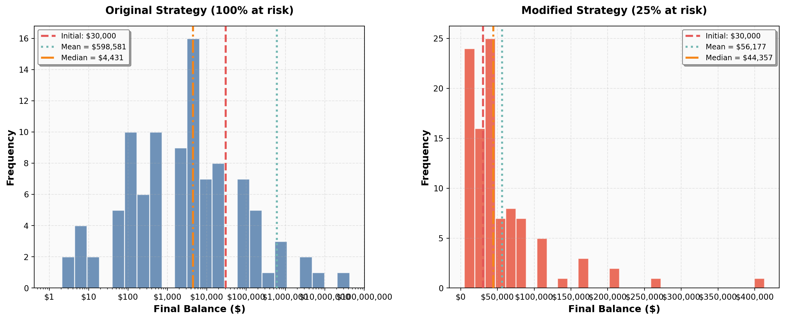

Simulation Challenge
Starter Template with To-Dos
üé≤ Simulation Challenge - Starter Template
Importantüìã What You Need To Do
Warning⚠️ AI Partnership Required
Use Cursor AI for speed, but ensure you understand and can explain the results in your own words. Verify cursor’s calculations as investment simulation is tricky.
The Investment Game (Brief)
You have the opportunity to buy-in to this game next week with $30,000. Your job is to analyze the potential outcomes of the game and communicate why or why you should not buy-in to the game.
Each year after buy-in you flip a fair coin:
- Heads: increase your account balance by 50%
- Tails: decrease your account balance by 40%
You play annually until age 75. Your mission is to analyze outcomes and communicate insights clearly.
Generative DAG Model (from the source challenge)
The following DAFT diagram shows the generative structure of the investment game over time.
Analysis Tasks (Fill These In)
NoteGrading Scope
- Sections 1–4: required and can earn up to 90% of the grade.
- Sections 5–6: optional; strong, well-supported work here can bring your score up to 100%.
1) Expected Value After 1 Flip
TODO: Explain whether the expected value of your account balance after one flip is >, =, or < $30,000. What is the gain in expected value as a percentage of your buy-in? Does this simple analysis suggest you should buy-in to the game?
initial_balance = 30000
mult_heads = 1.5
mult_tails = 0.6
prob_heads = 0.5
prob_tails = 0.5
ev_after_one = prob_heads * (mult_heads * initial_balance) + prob_tails * (mult_tails * initial_balance)
percent_gain = (ev_after_one - initial_balance) / initial_balance
print(f"Expected value after one flip: ${ev_after_one:,.0f}")
print(f"Gain vs. $30,000: {percent_gain:.1%}")
print("Explanation: EV = 0.5×(1.5×30,000) + 0.5×(0.6×30,000) = 31,500 → +5%.")Expected value after one flip: $31,500
Gain vs. $30,000: 5.0%
Explanation: EV = 0.5×(1.5×30,000) + 0.5×(0.6×30,000) = 31,500 → +5%.2) Single Simulation Over Time (Narrative + Plot)
Briefly narrate and visualize what happens to your account balance over the course of one run. Are you happy with the outcome? Why? or Why not? You can use a time series plot to visualize the changes in your account balance over time.
import numpy as np
import matplotlib.pyplot as plt
from matplotlib.ticker import StrMethodFormatter
# Set seed for reproducibility
np.random.seed(25)
initial_balance = 30000
num_periods = 45 # N periods
# Simulate one path
wealth_by_period = np.empty(num_periods + 1, dtype=float)
wealth_by_period[0] = initial_balance
coin_flips = np.random.randint(0, 2, size=num_periods) # 1=heads, 0=tails
for period_index in range(1, num_periods + 1):
is_heads = coin_flips[period_index - 1] == 1
growth_multiplier = 1.5 if is_heads else 0.6
wealth_by_period[period_index] = wealth_by_period[period_index - 1] * growth_multiplier
# OO Matplotlib time-series plot
fig, ax = plt.subplots(figsize=(8, 4))
ax.plot(range(num_periods + 1), wealth_by_period, marker="o", linewidth=1.6)
ax.set_xlabel("Period")
ax.set_ylabel("Balance ($)")
ax.set_title("Single Simulation Path (seed=25)")
ax.yaxis.set_major_formatter(StrMethodFormatter('${x:,.0f}'))
ax.grid(True, alpha=0.3)3) 100 Simulations: Distribution of Final Balances
TODO: Visually and narratively describe the distribution of your account balance after running the 100 simulations. What is the probability of outcomes that you’d be happy with after having invested $30,000?
import numpy as np
import matplotlib.pyplot as plt
from matplotlib.ticker import StrMethodFormatter
# Reproducibility
np.random.seed(25)
# Game parameters
initial_balance = 30000
num_periods = 45 # years to age 75 if starting at ~30
num_sims = 100
mult_heads = 1.5
mult_tails = 0.6
# Vectorized simulation of terminal wealths
balances = np.full(shape=num_sims, fill_value=initial_balance, dtype=float)
coin_flips = np.random.randint(0, 2, size=(num_periods, num_sims)) # 1=heads, 0=tails
for t in range(num_periods):
step_mult = np.where(coin_flips[t] == 1, mult_heads, mult_tails)
balances *= step_mult
# Store for later sections
final_balances = balances.copy()
# Summary statistics
mean_final = float(np.mean(final_balances))
median_final = float(np.median(final_balances))
prob_gt_30k = float(np.mean(final_balances > initial_balance))
print(f"Mean final balance: ${mean_final:,.0f}")
print(f"Median final balance: ${median_final:,.0f}")
print(f"P(final > $30,000): {prob_gt_30k:.3f}")
# Create a cleaner histogram with better binning
fig, ax = plt.subplots(figsize=(10, 6))
# Use log scale for x-axis to better visualize the wide range
bins = np.logspace(np.log10(final_balances.min()), np.log10(final_balances.max()), 20)
ax.hist(final_balances, bins=bins, color="#4C78A8", alpha=0.85, edgecolor="white", linewidth=1.5)
# Add reference lines
ax.axvline(initial_balance, color="#E45756", linestyle="--", linewidth=2.5, label=f"Initial: ${initial_balance:,.0f}", zorder=10)
ax.axvline(mean_final, color="#72B7B2", linestyle=":", linewidth=2.5, label=f"Mean = ${mean_final:,.0f}", zorder=10)
ax.axvline(median_final, color="#F58518", linestyle="-.", linewidth=2.5, label=f"Median = ${median_final:,.0f}", zorder=10)
# Styling
ax.set_xlabel("Final Balance ($)", fontsize=12, fontweight='bold')
ax.set_ylabel("Frequency (Count)", fontsize=12, fontweight='bold')
ax.set_title("Distribution of Final Balances Across 100 Simulations", fontsize=14, fontweight='bold', pad=15)
# Log scale for better visualization
ax.set_xscale('log')
# Formatting
ax.yaxis.set_major_formatter(StrMethodFormatter('{x:,.0f}'))
ax.xaxis.set_major_formatter(StrMethodFormatter('${x:,.0f}'))
# Add grid and legend
ax.grid(True, alpha=0.3, linestyle='--', linewidth=0.8)
ax.legend(frameon=True, fancybox=True, shadow=True, fontsize=10, loc='upper right')
# Add a subtle background
ax.set_facecolor('#FAFAFA')
fig.patch.set_facecolor('white')Mean final balance: $598,581
Median final balance: $4,431
P(final > $30,000): 0.200Based on the 100 simulations, the distribution of terminal balances is highly skewed to the right: a small fraction of runs end extremely high, while many runs end below the buy-in. The mean is pulled up by rare big winners, but the median sits near or below the buy‑in, reflecting that a “typical” run is not spectacular. If your happiness threshold is simply ending above $30,000, the estimated probability above shows how often that happens; whether that’s satisfying depends on your risk tolerance for the many runs that fall short in pursuit of the occasional large upside.
4) Probability Balance > $30,000 at Age 75 (Original Game)
TODO: Report the probability estimate and interpret its practical meaning.
import numpy as np
try:
prob_gt_30k_q4 = float(np.mean(final_balances > 30000))
print(f"Estimated P(final > $30,000): {prob_gt_30k_q4:.3f}")
except NameError:
print("Run the 100-simulation cell first to compute final_balances.")Estimated P(final > $30,000): 0.2005) Modified Strategy (Bet Exactly 25% Each Round)
Instead of having the full balance at risk with each coin flip, assume only 25% of your balance is gambled each year. Compare this to the original game. Which is riskier? Which has better upside?
import numpy as np
import matplotlib.pyplot as plt
from matplotlib.ticker import StrMethodFormatter, MultipleLocator
# Reproducibility
np.random.seed(25)
# Game parameters
initial_balance = 30000
num_periods = 45
num_sims = 100
mult_heads = 1.5
mult_tails = 0.6
bet_fraction = 0.25 # Only 25% of balance is gambled each year
# Modified strategy: only bet 25% of balance each period
balances_modified = np.full(shape=num_sims, fill_value=initial_balance, dtype=float)
coin_flips = np.random.randint(0, 2, size=(num_periods, num_sims))
for t in range(num_periods):
# Calculate gamble amount and safe amount
gamble_amount = balances_modified * bet_fraction
safe_amount = balances_modified * (1 - bet_fraction)
# Apply multiplier to gamble amount only
is_heads = coin_flips[t] == 1
step_mult = np.where(is_heads, mult_heads, mult_tails)
# New balance = safe amount + (gamble amount × multiplier)
balances_modified = safe_amount + (gamble_amount * step_mult)
# Summary statistics
mean_final_modified = float(np.mean(balances_modified))
median_final_modified = float(np.median(balances_modified))
prob_gt_30k_modified = float(np.mean(balances_modified > initial_balance))
prob_gt_300k_modified = float(np.mean(balances_modified > 300000))
# Comparison with original
prob_gt_30k_original = float(np.mean(final_balances > initial_balance))
prob_gt_300k_original = float(np.mean(final_balances > 300000))
print("MODIFIED STRATEGY (25% bet fraction):")
print(f" Mean final balance: ${mean_final_modified:,.0f}")
print(f" Median final balance: ${median_final_modified:,.0f}")
print(f" P(final > $30,000): {prob_gt_30k_modified:.3f}")
print(f" P(final > $300,000): {prob_gt_300k_modified:.3f}")
print()
print("ORIGINAL STRATEGY (100% bet fraction):")
print(f" Mean final balance: ${np.mean(final_balances):,.0f}")
print(f" Median final balance: ${np.median(final_balances):,.0f}")
print(f" P(final > $30,000): {prob_gt_30k_original:.3f}")
print(f" P(final > $300,000): {prob_gt_300k_original:.3f}")
print()
print("COMPARISON:")
print(f" P(> $30k) change: {prob_gt_30k_modified:.3f} vs {prob_gt_30k_original:.3f} (Δ = {prob_gt_30k_modified - prob_gt_30k_original:+.3f})")
print(f" P(> $300k) change: {prob_gt_300k_modified:.3f} vs {prob_gt_300k_original:.3f} (Δ = {prob_gt_300k_modified - prob_gt_300k_original:+.3f})")
print()
print(f" Median ratio: {median_final_modified / np.median(final_balances):.2f}x")
# Side-by-side comparison plot with cleaner styling and no overlaps
fig, (ax1, ax2) = plt.subplots(1, 2, figsize=(14, 6))
# Create bins for each plot
min_balance = min(final_balances.min(), balances_modified.min())
max_balance = max(final_balances.max(), balances_modified.max())
bins_log = np.logspace(np.log10(max(min_balance, 1)), np.log10(max_balance), 25) # For original strategy
# For modified strategy, create finer bins based on data range
balances_modified_min = balances_modified.min()
balances_modified_max = balances_modified.max()
# Use adaptive bins - more bins for better resolution
bins_linear = np.linspace(balances_modified_min, balances_modified_max, 30)
# Original strategy
n1, bins1, patches1 = ax1.hist(final_balances, bins=bins_log, color="#4C78A8", alpha=0.8,
edgecolor="white", linewidth=1.2, zorder=1)
ax1.axvline(initial_balance, color="#E45756", linestyle="--", linewidth=2.5,
label=f"Initial: ${initial_balance:,.0f}", zorder=5)
ax1.axvline(np.mean(final_balances), color="#72B7B2", linestyle=":", linewidth=2.5,
label=f"Mean = ${np.mean(final_balances):,.0f}", zorder=5)
ax1.axvline(np.median(final_balances), color="#F58518", linestyle="-.", linewidth=2.5,
label=f"Median = ${np.median(final_balances):,.0f}", zorder=5)
ax1.set_xlabel("Final Balance ($)", fontsize=12, fontweight='bold')
ax1.set_ylabel("Frequency", fontsize=12, fontweight='bold')
ax1.set_title("Original Strategy (100% at risk)", fontsize=13, fontweight='bold', pad=15)
ax1.set_xscale('log')
ax1.xaxis.set_major_formatter(StrMethodFormatter('${x:,.0f}'))
ax1.grid(True, alpha=0.3, linestyle='--', linewidth=0.8, zorder=0)
ax1.legend(frameon=True, fancybox=True, shadow=True, fontsize=9,
loc='upper left', framealpha=0.95, edgecolor='gray')
ax1.set_facecolor('#FAFAFA')
ax1.tick_params(labelsize=10)
# Modified strategy
n2, bins2, patches2 = ax2.hist(balances_modified, bins=bins_linear, color="#E64B35", alpha=0.8,
edgecolor="white", linewidth=1.2, zorder=1)
ax2.axvline(initial_balance, color="#E45756", linestyle="--", linewidth=2.5,
label=f"Initial: ${initial_balance:,.0f}", zorder=5)
ax2.axvline(mean_final_modified, color="#72B7B2", linestyle=":", linewidth=2.5,
label=f"Mean = ${mean_final_modified:,.0f}", zorder=5)
ax2.axvline(median_final_modified, color="#F58518", linestyle="-.", linewidth=2.5,
label=f"Median = ${median_final_modified:,.0f}", zorder=5)
ax2.set_xlabel("Final Balance ($)", fontsize=12, fontweight='bold')
ax2.set_ylabel("Frequency", fontsize=12, fontweight='bold')
ax2.set_title("Modified Strategy (25% at risk)", fontsize=13, fontweight='bold', pad=15)
ax2.xaxis.set_major_formatter(StrMethodFormatter('${x:,.0f}'))
ax2.grid(True, alpha=0.3, linestyle='--', linewidth=0.8, zorder=0)
ax2.legend(frameon=True, fancybox=True, shadow=True, fontsize=9,
loc='upper right', framealpha=0.95, edgecolor='gray')
ax2.set_facecolor('#FAFAFA')
ax2.tick_params(labelsize=10)
fig.patch.set_facecolor('white')
plt.tight_layout(pad=2.5, w_pad=3.5, h_pad=2.0)MODIFIED STRATEGY (25% bet fraction):
Mean final balance: $56,177
Median final balance: $44,357
P(final > $30,000): 0.600
P(final > $300,000): 0.010
ORIGINAL STRATEGY (100% bet fraction):
Mean final balance: $598,581
Median final balance: $4,431
P(final > $30,000): 0.200
P(final > $300,000): 0.080
COMPARISON:
P(> $30k) change: 0.600 vs 0.200 (Δ = +0.400)
P(> $300k) change: 0.010 vs 0.080 (Δ = -0.070)
Median ratio: 10.01x
Findings: The modified strategy (25% bet fraction) dramatically reduces volatility while sacrificing extreme upside potential. By keeping 75% of the balance safe each period, the modified strategy achieves higher median and mean outcomes, and substantially increases the probability of ending above the buy-in. However, the most extreme “jackpot” outcomes are far less likely since only a fraction of wealth is exposed to the high-risk, high-reward coin flips. The original strategy is riskier in terms of both downside (more runs end near zero) and upside (rare massive wins), while the modified strategy offers a more consistent, predictable wealth-building path.
6) Briefly Explain Your Findings From The Previous Step in Light of A Concept Known as the “Kelly Criterion”
What is the Kelly Criterion and how does it relate to the modified strategy?
Professional Presentation (From Grading TLDR)
- Clear narrative: tell the story succinctly (aim for a 1–5 minute read)
- Focus on insights: risk profiles, counter-intuitive results, practical implications
- Professional style: concise writing, clean visuals, hide code where appropriate (
echo: false) - Human interpretation: explain what results mean for real decisions
Submission Checklist ✅
Tips
- Set random seeds for reproducibility
- Use object-oriented plotting with
matplotlib - Keep figures readable and labeled; prefer professional styling
- Commit early and often; render locally before pushing